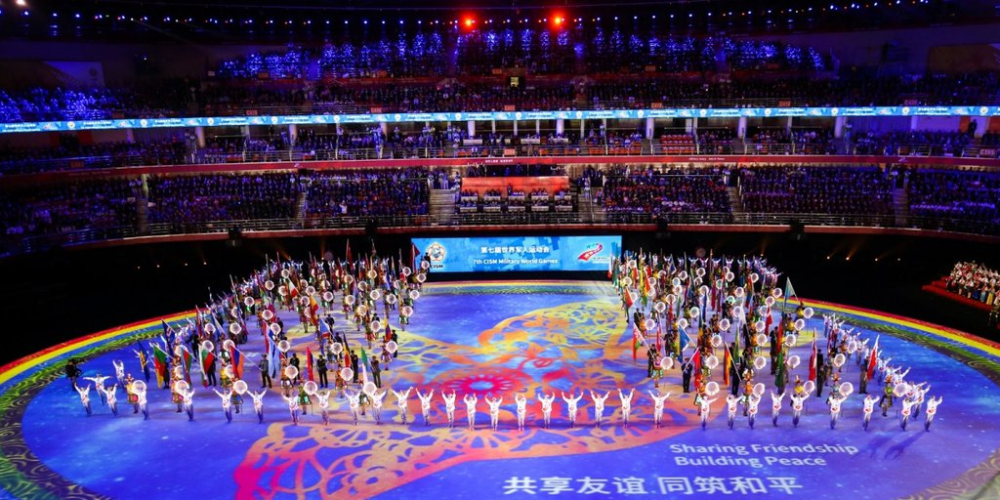
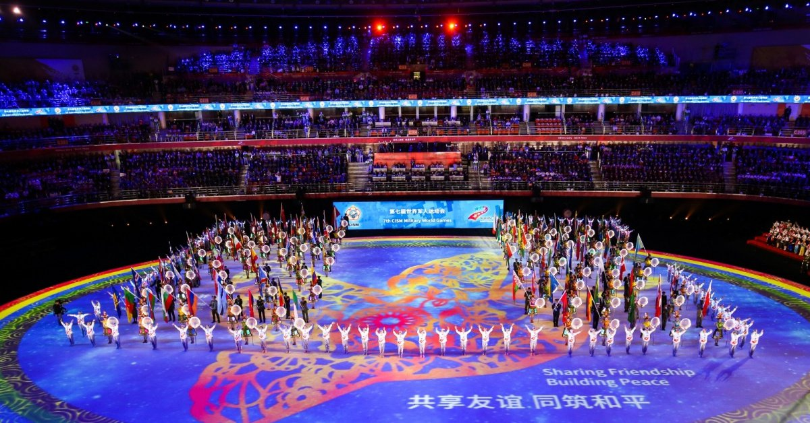
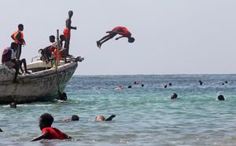
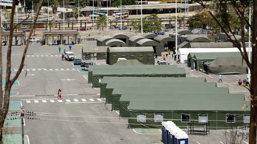

Los atletas con síntomas de coronavirus tras los juegos militares de Wuhan en octubre refuerzan la hipótesis de un encubrimiento por parte de China

Los Juegos Militares Mundiales rara vez copan la atención de los medios.Sin embargo, la competencia deportiva está ahora en el foco principal después que varios atletas que participaron en la edición del pasado octubre en Wuhan reportaron síntomas compatibles con el coronavirus, apenas unas semanas antes que el Covid-19 comenzara a extenderse desde la ciudad china por todo el planeta.
Estos juegos mundiales acogieron a más 10.000 deportistas de 100 países y tuvieron lugar en la capital de la provincia de Hubei del 18 al 27 de octubre.Fue la séptima edición de los Juegos, establecidos en 1995.
Mientras aún se investigan la cronología y el exacto lugar en el que se originó el virus —¿un mercado chino?, ¿un laboratorio?— , cobra cada vez más fuerza la hipótesis según la cual la gran concentración de atletas y de personal de apoyo en la ciudad, la falta de medidas para prevenir el contagio y el regreso sin cuarentena de los participantes a sus países puedan haber favorecido la propagación de la pandemia a Europa, hasta el momento el continente más golpeado con más de 150 mil muertos.
En los últimos días se multiplicaron los testimonios de atletas que afirmaron tener síntomas compatibles con el coronavirus después de regresar a Europa, como fiebre alta y severos problemas respiratorios.Los síntomas se desarrollaron varias semanas antes de que China notificara, en diciembre, a la Organización Mundial de la Salud de que había detectado el virus en Wuhan.
El testimonio de un atleta italiano
El testimonio más reciente es el de Matteo Tagliariol, medalla oro en la espada individual en Beijing 2008 y uno de los 170 atletas italianos presentes en los Juegos Militares de Wuhan.
'Cuando llegamos a Wuhan, casi todos enfermamos.Pero lo peor fue el regreso a casa.Después de una semana tuve fiebre muy alta, sentí que no podía respirar.La dolencia ni siquiera desapareció con antibióticos, me recuperé después de tres semanas y estuve debilitado por mucho tiempo.Entonces mi hijo y mi pareja se enfermaron.Cuando se empezó a hablar sobre el virus, me dije: también lo tuve', dijo a la
La Gazzetta dello Sport el jueves.

Tras la entrevista, Tagliariol matizó en
Instagram sus declaraciones, aunque confirmó los síntomas: 'Podría haber sido el virus: no tengo certezas.Estaba enfermo, no sé si contraje el virus, pero tan pronto como el servicio de salud ya no esté tan saturado, seguramente iré a hacerme la prueba', dijo.
Por el momento no hubo comentarios de los grupos deportivos militares italianos, pero no se realizaron pruebas en los atletas que participaron en la expedición, según el
Corriere della Sera.
El caso de los atletas franceses
Uno de los 401 atletas del ejército que representaron a Francia en Wuhan contó que tras volver estuvo enfermo con fiebre, dificultades para respirar y sin poder moverse de la cama durante tres días.En ese momento, descubrió en las redes sociales que varios de sus compañeros de delegación también estuvieron enfermos con síntomas similares.
Otra de las participantes, la campeona mundial de pentatlón moderno, Elodie Clouvel, dijo a finales de marzo comentó en una entrevista que creía haber pasado el coronavirus, al igual que su pareja, el deportista cinco veces campeón mundial Valentin Belaud.
Elodie Clouvel y su pareja, el cinco veces campeón mundial Valentin Belaud.(Instagram/@elodieclouvel)
Además, declaró que cuando vio tiempo después al médico militar, este le dijo que creía que 'lo habían tenido porque muchos de la delegación habían estado enfermos'.
Según una investigación realizada por el periódico
L'Équipe publicada este jueves, en las semanas siguientes un médico militar les diagnosticó 'síntomas obvios de coronavirus'.El Ministerio de Defensa transalpino, sin embargo, negó la positividad e inmediatamente ordenó a los dos no hablar más públicamente sobre el tema.
Además, el ejército no tiene intención de hacer pruebas a los participantes de la competición para ver si tuvieron Covid-19.
El lunes, médicos franceses compartieron sus sospechas de que el coronavirus ya circulaba por el país a finales de diciembre, después de haber diagnosticado 'a posteriori' a un paciente, que ingresó en un hospital de la región de París el 27 de diciembre a partir de las pruebas que se le hicieron entonces
La ciclista estadounidense Maatje Benassi
La ciclista Maatje Benassi (Foto: US Armed Forces Sports)
También hay rumores de que también hubo numerosos casos de contagiados entre los 280 miembros de la expedición estadounidense.
Una de ellas, la reservista Maatje Benassi, que compitió en la prueba de ciclismo de ruta en Wuhan, ha estado viviendo blindada en su casa en Virginia, recibiendo cientos de amenazas de muerte al ser acusada de ser la 'paciente 0' que introdujo el virus a Estados Unidos.
Varios atletas han rechazado hablar sobre la cuestión, siguiendo instrucciones de las autoridades militares, que han pedido no responder a las preguntas de la prensa.Un atleta francés explicó bajo condición de anonimato que han intentado tranquilizarlos diciendo que el virus llegó en noviembre y no en octubre.
Hasta el momento, Suecia fue el único país que admitió dos casos de Covid-19 entre sus atletas.
Cronología y origen de la pandemia: las dudas sobre China
La posible positividad de los atletas ha sido un punto controvertido en la cronología de la pandemia.
Las autoridades chinas fueron acusadas de ocultar la epidemia en sus comienzos.La policía de Wuhan reprendió a los médicos que habían dado la voz de alarma en diciembre.
Beijing había designado claramente a principios de año un mercado de Wuhan como cuna de la epidemia, cuando el virus habría sido transmitido de una especie animal a otra, antes de contaminar al hombre.
Por otra parte, los dirigentes estadounidenses afirman tener pruebas que el virus se propagó desde un laboratorio de virología de Wuhan.
China rechaza iniciar una investigación internacional sobre el origen del coronavirus mientras no se haya vencido la pandemia, declaró este miércoles el embajador chino ante las Naciones Unidas.
Por su parte, la Organización Mundial de la Salud (OMS) aseguró el jueves que trabaja en la posibilidad de enviar una nueva misión de expertos al país asiático para buscar el origen del coronavirus.
MÁS SOBRE ESTE TEMA:
Posted On: 2020-05-07T00:00:00




Content Date: 2020-05-07
Download Date: 2021-04-21
Document ID: L0C04AQFA